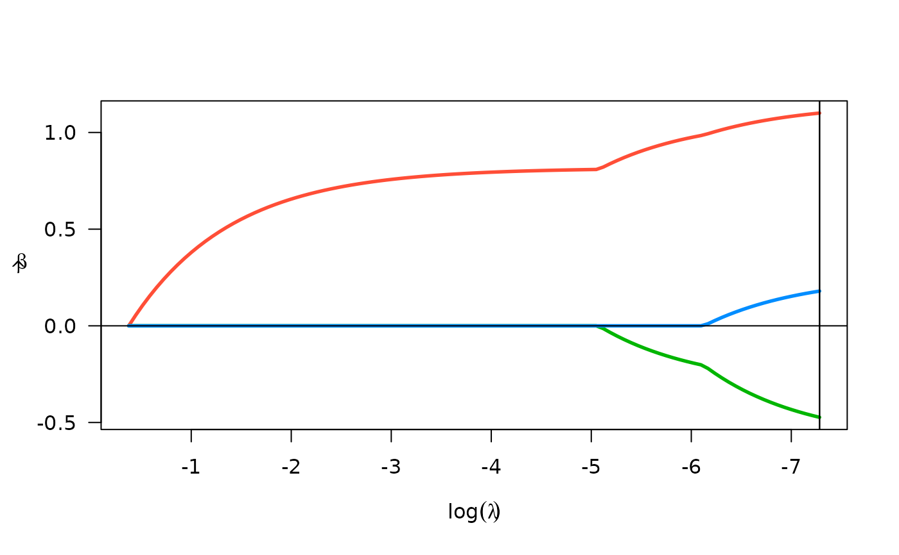

Perform time series ranked sparsity methods
Usage
srlTS(
y,
X = NULL,
n_lags_max,
gamma = c(0, 2^(-2:4)),
ptrain = 0.8,
pf_eps = 0.01,
w_endo,
w_exo,
ncvreg_args = list(penalty = "lasso", returnX = FALSE, lambda.min = 0.001)
)
# S3 method for srlTS
plot(x, log.l = TRUE, ...)
# S3 method for srlTS
coef(object, choose = c("AICc", "BIC", "all"), ...)
# S3 method for srlTS
print(x, ...)
# S3 method for srlTS
summary(object, ...)Arguments
- y
univariate time series outcome
- X
matrix of predictors (no intercept)
- n_lags_max
maximum number of lags to consider
- gamma
vector of exponent for weights
- ptrain
prop. to leave out for test data
- pf_eps
penalty factors below this will be set to zero
- w_endo
optional pre-specified weights for endogenous terms
- w_exo
optional pre-specified weights for exogenous terms (see details)
- ncvreg_args
additional args to pass through to ncvreg
- x
a srlTS object
- log.l
Should the x-axis (lambda) be logged?
- ...
passed to downstream functions
- object
a srlTS object
- choose
which criterion to use for lambda selection (AICc, BIC, or all)
Value
A list of class slrTS with elements
- fits
a list of lasso fits
- ncvreg_args
arguments passed to ncvreg
- gamma
the (negative) exponent on the penalty weights, one for each fit
- n_lags_max
the maximum number of lags
- y
the time series
- X
the utilized matrix of exogenous features
- oos_results
results on test data using best of fits
- train_idx
index of observations used in training data
x invisibly
a vector of model coefficients
x (invisibly)
the summary object produced by ncvreg evaluated at the best tuning parameter combination (best AICc).
Details
The default weights for exogenous features will be chosen based on
a similar approach to the adaptive lasso (using bivariate OLS estimates). For
lower dimensional X, it's advised to set w_exo="unpenalized", because
this allows for statistical inference on exogenous variable coefficients
via the summary function.
References
Breheny, P. and Huang, J. (2011) Coordinate descent algorithms for nonconvex penalized regression, with applications to biological feature selection. Ann. Appl. Statist., 5: 232-253.
Peterson, R.A., Cavanaugh, J.E. Ranked sparsity: a cogent regularization framework for selecting and estimating feature interactions and polynomials. AStA Adv Stat Anal (2022). https://doi.org/10.1007/s10182-021-00431-7
Examples
data("LakeHuron")
fit_LH <- srlTS(LakeHuron)
fit_LH
#> PF_gamma best_AICc best_BIC
#> 0.00 147.2053 159.8118
#> 0.25 146.3811 156.7937
#> 0.50 146.0177 156.4739
#> 1.00 144.1002 154.4967
#> 2.00 143.0362 153.2544
#> 4.00 149.8227 156.1558
#> 8.00 149.8227 156.1558
#> 16.00 149.8227 156.1558
#>
#> Test-set prediction accuracy
#> rmse rsq mae
#> AIC 0.7751 0.6203825 0.5888855
#> BIC 0.7751 0.6203825 0.5888855
coef(fit_LH)
#> 0.00069
#> (Intercept) 111.8740292
#> lag1 1.1003545
#> lag2 -0.4732437
#> lag3 0.1796316
#> lag4 0.0000000
#> lag5 0.0000000
#> lag6 0.0000000
#> lag7 0.0000000
#> lag8 0.0000000
#> lag9 0.0000000
plot(fit_LH)
